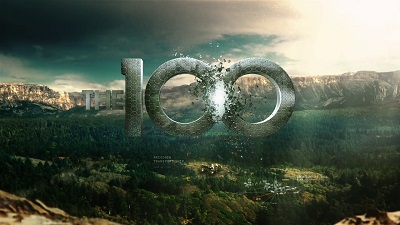

Uma história sobre sobrevivência, humanidade e as escolhas que fazemos
01. A História
Quase 100 anos depois de uma catástrofe nuclear ter destruído grande parte da vida na Terra, os últimos sobreviventes da humanidade vivem numa estação espacial conhecida como Arca.
Quando os recursos começam a escassar, 100 adolescentes prisioneiros são enviados para a Terra com a missão de descobrir se o planeta voltou a ser habitável. No entanto, aquilo que inicialmente parecia ser uma oportunidade de recomeço, transforma-se numa luta constante pela sobrevivência.
Ao longo da série, os jovens enfrentam perigos, conflitos entre diferentes comunidades e decisões que colocam à prova os seus valores e a sua capacidade de sobreviver.
02. As Personagens
A série apresenta várias personagens com personalidades, objetivos e formas de pensar distintas. As suas relações e decisões desempenham um papel fundamental no desenvolvimento da história.
- Clarke Griffin: uma das principais líderes do grupo, conhecida pela sua inteligência e capacidade de tomar decisões difícies.
- Bellamy Blake: inicialmente responsável pela proteção dos jovens, revela-se uma figura importante na organização e progresso do grupo
- Octavia Blake: uma personagem independente e determinada, cuja evolução é marcada pelos desafios que enfrenta na Terra.
- Raven Reyes: uma jovem extremamente inteligente, com grandes capacidades técnicas e científicas.
- John Murphy: uma personagem complexa, cuja personalidade e comportamento evoluem ao longo da série.
03. Temas e produção
Para além da ficção científica e da aventura, The 100 aborda questões relacionadas com a natureza humana e a organização da sociedade.
Entre os principais temas explorados, encontram-se:
- A sobrevivência em situações extremas;
- A liderança e a responsabilidade;
- Os conflitos entre diferentes comunidades.
Criada por Jason Rothenberg, a séria conta com sete temporadas e um total de 100 episódios, tendo terminado em 2020.